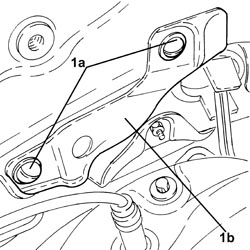
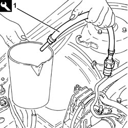
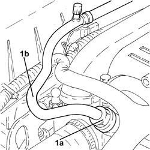
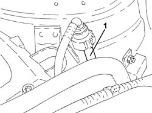
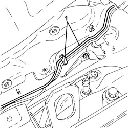
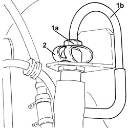
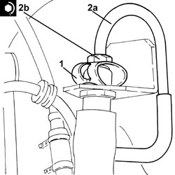
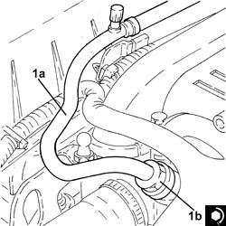

3340B56 RIGID PIPE FROM HYDRAULIC CONTROL UNIT TO RIGHT FRONT BRAKE - R.R.
- Path
- Procedures > 33 BRAKES > 3340 ANTI-LOCK BRAKING SYSTEM (ABS) > 3340B ABS SYSTEM PIPES > 3340B56 RIGID PIPE FROM HYDRAULIC CONTROL UNIT TO RIGHT FRONT BRAKE - R.R.
- Kind
- repair procedure (removal / refitting; the operation number is the code)
- Applies to
- all engines; all production periods
- Interactive page
- https://sloeber94.github.io/elrnDB-fCrm/en/#/194000506
Applies to: engines: 2.2; all production periods
 Removing
Removing
 Refitting
Refitting- Position the vehicle on a lift.
Op. 5530B52 BATTERY SUPPORT/DRIP TRAY - R.R
Op. 3340A12 ABS HYDRAULIC AND ELECTRONIC CONTROL UNIT - R.R.
Op. 4450B04 RIGHT FRONT WHEEL - R.R
Op. 7055B66 ENGINE COMPARTMENT DUST COVER IN RIGHT FRONT WHEEL ARCH - R.R.
Op. 7055B91 RIGHT FRONT WHEEL ARCH LINER - R.R.
1. Remove the fastenings (1a) and remove the heat shield (1b).

Applies to: engines: 2.2; all production periods
1. Connect the tool to the bleed valve on the fuel supply pipe and discharge the fuel pressure.
Tool | Description | Function | Validity |
|---|---|---|---|
2000002900 | Breather connector | Fuel system pressure drainage | 1.8 2.2 |

Applies to: engines: 2.2; all production periods
1. Undo the connector (1a), disconnect the fuel supply pipe (1b), fuel manifold pipe side.
- Release the fuel supply pipe from the fastenings in the engine compartment and move it to the side.

Applies to: engines: 2.2; all production periods
1. Disconnect the rapid connector for the intermediate fuel vapour pipe, air intake fuel vapour inlet pipe side.
- Release the intermediate fuel vapour pipe from the fastenings in the engine compartment and move it to the side.

Applies to: engines: 2.2; all production periods
Op. 1048A10 AIR FILTER ASSEMBLY - R.R.
1. Release the rigid pipe from the hydraulic control unit to the right front brake from the fastenings in the engine compartment.

Applies to: engines: 2.2; all production periods
1. Undo the connector (1a) and disconnect the rigid pipe from the hydraulic control unit to the right front brake (1b), flexible pipe side.
2. Release the flexible pipe retaining clip.

Applies to: engines: 2.2; all production periods
- Working in the engine compartment, remove the rigid pipe from the hydraulic control unit to the right front brake.
Applies to: engines: 2.2; all production periods
Refitting
Removing- Place the rigid pipe from the hydraulic control unit to the right front brake in position.
1. Place the flexible pipe retaining clip in position.
2. Connect the rigid pipe (2a), flexible pipe side and tighten the connector (2b) to the recommended torque.
Component | Fastening | dia | Value (daNm) | Validity |
|---|---|---|---|---|
Brake pipe connectors | Connector | M10/M12 | 1.4 ÷ 1.8 |

Applies to: engines: 2.2; all production periods
- Secure the rigid pipe from the hydraulic control unit to the right front brake using the fastenings in the engine compartment.
Op. 1048A10 AIR FILTER ASSEMBLY - R.R.
- Place the intermediate fuel vapour pipe in its housing and secure it to the fastenings in the engine compartment.
- Connect the rapid connector for the intermediate fuel vapour pipe, air intake fuel vapour inlet pipe side.
1. Place the fuel supply pipe (1a) in its housing, connect it and tighten the connector (1b) to the recommended torque.
Component | Fastening | dia | Value (daNm) | Validity |
|---|---|---|---|---|
Front fuel supply pipe | Connector | - | (fuel manifold side) 1.0 | 2.2 |

Applies to: engines: 2.2; all production periods
- Place the heat shield in position and secure it.
Op. 7055B91 RIGHT FRONT WHEEL ARCH LINER - R.R.
Op. 7055B66 ENGINE COMPARTMENT DUST COVER IN RIGHT FRONT WHEEL ARCH - R.R.
Op. 4450B04 RIGHT FRONT WHEEL - R.R
Op. 3340A12 ABS HYDRAULIC AND ELECTRONIC CONTROL UNIT - R.R.
Op. 0010T64 BRAKE AND/OR CLUTCH FLUID CHECK LEVEL AND TOP UP AS NECESSARY
Op. 0010T65 HYDRAULIC BRAKE SYSTEM - BLEED AIR
Op. 5530B52 BATTERY SUPPORT/DRIP TRAY - R.R
- Remove the vehicle from the lift.
Applies to: engines: 1.8, 1.9 JTD 8v, 1.9 JTD 16v, 2.4 JTD 20v; all production periods
Removing
Refitting- Position the vehicle on a lift.
Op. 5530B52 BATTERY SUPPORT/DRIP TRAY - R.R
Op. 3340A12 ABS HYDRAULIC AND ELECTRONIC CONTROL UNIT - R.R.
Op. 4450B04 RIGHT FRONT WHEEL - R.R
Op. 7055B66 ENGINE COMPARTMENT DUST COVER IN RIGHT FRONT WHEEL ARCH - R.R.
Applies to: engines: 1.8, 1.9 JTD 8v, 1.9 JTD 16v, 2.4 JTD 20v; all production periods
Op. 1048A10 AIR FILTER ASSEMBLY - R.R.
- Release the rigid pipe from the hydraulic control unit to the right front brake from the fastenings in the engine compartment.
Applies to: engines: 1.8, 1.9 JTD 8v, 1.9 JTD 16v, 2.4 JTD 20v; all production periods
1. Undo the connector (1a) and disconnect the rigid pipe from the hydraulic control unit to the right front brake (1b), flexible pipe side.
2. Withdraw the hose retaining clip.
Applies to: engines: 1.8, 1.9 JTD 8v, 1.9 JTD 16v, 2.4 JTD 20v; all production periods
- Working in the engine compartment, remove the rigid pipe from the hydraulic control unit to the right front brake.
Applies to: engines: 1.8, 1.9 JTD 8v, 1.9 JTD 16v, 2.4 JTD 20v; all production periods
Refitting
Removing- Place the rigid pipe from the hydraulic control unit to the right front brake in position.
1. Refit the hose retaining clip in its housing.
2. Connect the rigid pipe (2a), flexible pipe side and tighten the connector (2b) to the recommended torque.
Component | Fastening | dia | Value (daNm) | Validity |
|---|---|---|---|---|
Brake pipe connectors | Connector | M10/M12 | 1.4 ÷ 1.8 |
Applies to: engines: 1.8, 1.9 JTD 8v, 1.9 JTD 16v, 2.4 JTD 20v; all production periods
- Secure the rigid pipe from the hydraulic control unit to the right front brake using the fastenings in the engine compartment.
Applies to: engines: 1.8, 1.9 JTD 8v, 1.9 JTD 16v, 2.4 JTD 20v; all production periods
Op. 7055B91 RIGHT FRONT WHEEL ARCH LINER - R.R.
Op. 7055B66 ENGINE COMPARTMENT DUST COVER IN RIGHT FRONT WHEEL ARCH - R.R.
Op. 4450B04 RIGHT FRONT WHEEL - R.R
Op. 3340A12 ABS HYDRAULIC AND ELECTRONIC CONTROL UNIT - R.R.
Op. 0010T64 BRAKE AND/OR CLUTCH FLUID CHECK LEVEL AND TOP UP AS NECESSARY
Op. 0010T65 HYDRAULIC BRAKE SYSTEM - BLEED AIR
Op. 5530B52 BATTERY SUPPORT/DRIP TRAY - R.R
- Remove the vehicle from the lift.
Topics linked from this page (9)
- 0010T64 BRAKE AND/OR CLUTCH FLUID CHECK LEVEL AND TOP UP AS NECESSARY
- 0010T65 HYDRAULIC BRAKE SYSTEM - BLEED AIR
- 1048A10 AIR FILTER ASSEMBLY - R.R.
- 3340A12 ABS HYDRAULIC AND ELECTRONIC CONTROL UNIT - R.R.
- 4450B04 RIGHT FRONT WHEEL - R.R
- 5530B10 BATTERY - R+R
- 5530B52 BATTERY SUPPORT/DRIP TRAY - R.R
- 7055B66 ENGINE COMPARTMENT DUST COVER IN RIGHT FRONT WHEEL ARCH - R.R.
- 7055B91 RIGHT FRONT WHEEL ARCH LINER - R.R.